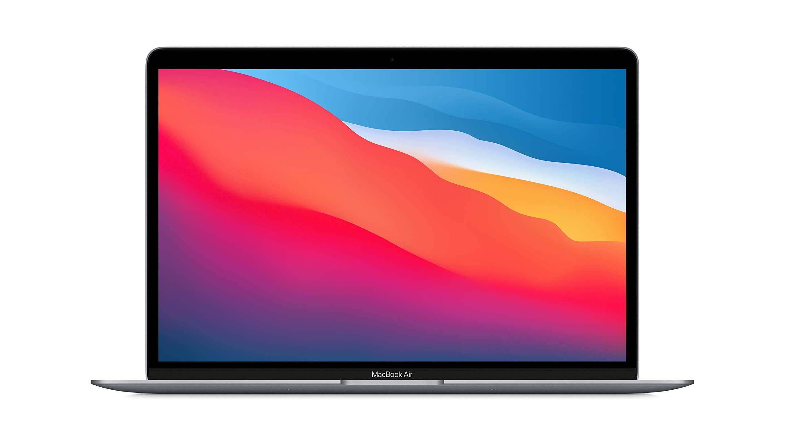

-
تکنولوژی

مکبوک ایر M2 هم مانند مدل پرو در نسخه پایه حافظه SSD کندتری دارد
چند وقت پیش در گزارشهای متعددی مشخص شد که سرعت حافظه SSD مکبوک پرو M2 در مدل پایه بسیار کمتر از مکبوک پرو M1 است. حالا با عرضه مکبوک ایر M2 معلوم شده که این ...
چند وقت پیش در گزارشهای متعددی مشخص شد که سرعت حافظه SSD مکبوک پرو M2 در مدل پایه بسیار کمتر از مکبوک پرو M1 است. حالا با عرضه مکبوک ایر M2 معلوم شده که این لپتاپ هم از مشکل مشابهی رنج میبرد چون پیکربندی حافظه آن مشابه مدل پرو است.
به گزارش خبرگزاری ورج، بر اساس نتایجی که در نرمافزار Disk Speed Test به دست آمده، سرعت نوشتن اطلاعات در مدل پایه 256 گیگابایتی مکبوک ایر M2 حدود 15 تا 30 درصد کمتر از مدل 512 گیگابایتی همین دستگاه است. سرعت خواندن اطلاعات هم میتواند 40 تا 50 درصد کندتر باشد.

علت کندتر بودن سرعت SSD در مکبوک ایر M2 چیست؟
مشکل مدل پایه مکبوکهای جدید این است که فقط یک تراشه NAND دارند، در حالی که مدلهای 512 گیگابایتی و بالاتر از دو حافظه NAND استفاده میکنند. وبسایت ورج میگوید اگرچه مدل 256 گیگابایتی مکبوک ایر M1 را در اختیار نداشته تا این دو دستگاه را با هم مقایسه کند، اما مقایسه مدل 512 گیگابایتی M1 نشان میدهد که سرعت در خواندن و نوشتن بیشتر از مدل 256 گیگابایتی M2 است.
پایینتر بودن سرعت حافظه در مکبوک ایر M2 میتواند در انجام کارهایی مثل انتقال فایل و عملکرد کلی سیستم اثر بگذارد، چون مکها در صورت پر شدن حافظه رم از SSD به عنوان حافظه موقت استفاده میکنند. با این حال، بعید به نظر میرسد که کاربران عادی در استفاده از این دستگاه متوجه افت کیفی عملکرد شوند.
ظاهرا پخش دو ویدیوی 4K در یوتیوب و 25 زبانه باز در مرورگر کروم در هیچ کدام از این دو دستگاه باعث نمیشود نیاز به حافظه موقت به وجود بیاید. زمان بوت لپتاپ هم در مدلهای 256 و 512 گیگابایتی تقریبا یکسان است و نمیشود تفاوت خاصی را میان آنها مشاهده کرد. در مجموع به نظر میرسد که این افت سرعت برای کاربران ایر که کارهای سبکتری دارند اهمیت کمتری داشته باشد. کاربران پرو به خاطر فعالیتهای سنگینتر خود ممکن است در طول زمان بیشتر متوجه این تفاوت شوند.